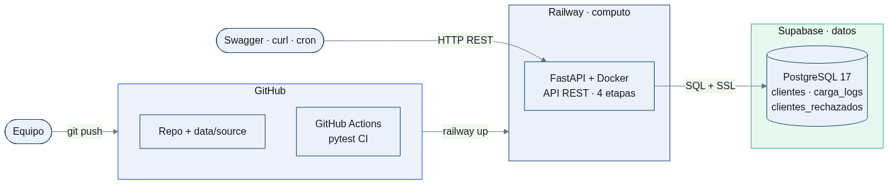
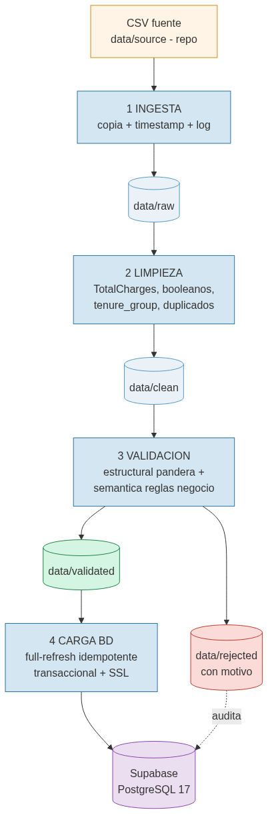
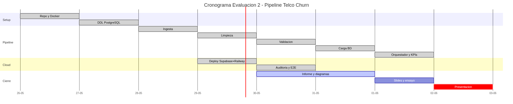

DUOC UC · ESCUELA DE INFORMÁTICA Y TELECOMUNICACIONES
Evaluación Parcial N°2 · ITY1101 Gestión de Datos para IA · Sección 003V
Caso: Telco Customer Churn · 2 de junio de 2026
15 min presentacióndemo en vivo5 min preguntas
Sin datos de calidad no hay modelo de IA que funcione. El pipeline es el cimiento.
| Dimensión | Enfoque tradicional | DataOps (nuestro proyecto) |
|---|---|---|
| Procesamiento | Excel manual, copy-paste | Scripts automatizados (4 etapas) |
| Errores | Invisibles, se detectan tarde | Validación explícita + registro de rechazos |
| Reproducibilidad | "Funciona en mi PC" | Docker + idempotente (mismo input → mismo estado) |
| Trazabilidad | Sin historial | Cada ejecución auditada en BD (carga_logs) |
| Colaboración | Un archivo, una persona | Git + GitHub + CI automático |
| Despliegue | Local, frágil | Cloud (Railway + Supabase), API pública |
DataOps = construir un sistema reproducible, observable y colaborativo, no solo "correr un script".

Tres servicios independientes. Si Railway cae, la BD sigue; se escala la API sin tocar los datos. Cumple lo pedido: no monolítico, desplegado en Railway, con Supabase.

Cada etapa es un endpoint REST independiente:
POST /pipeline/ingestPOST /pipeline/cleanPOST /pipeline/validatePOST /pipeline/loadPOST /pipeline/run → orquesta las 4Si una etapa falla, las anteriores ya dejaron su salida persistida → se retoma desde ahí.
Requisitos fijos, dependencias claras
→ cronograma, hitos, Carta Gantt
Exploratorio, iterativo
→ ciclos cortos, revisión cruzada
Cascada pura sería rígida; ágil pura, caótica para las dependencias técnicas. El híbrido planifica lo estable e itera lo incierto. Seguimiento con Trello.

| 26–28 may | Setup + DDL + pipeline (4 etapas) |
| 29 may | Deploy cloud (Supabase + Railway) |
| 29 may | Auditoría + tests E2E |
| 30 may–1 jun | Informe, diagramas, slides |
| 2 jun | Entrega + defensa |
Hitos: H1 stack operativo · H2 pipeline end-to-end · H3 documentación y demo.
Qué hace: captura el CSV fuente y lo deposita en data/raw/ con sello temporal, sin transformarlo.
Herramienta: Python (shutil + pandas), logging con conteo de filas.
Ingesta por lotes (batch), no streaming: el dato es un CSV estático → Kafka sería sobreingeniería.
Dataset versionado en el repo → reproducible y sin dependencias externas en la demo.
Automatización clave: un comando deja el dato listo y trazado para la siguiente etapa.
TotalCharges venía como texto con vacíos → a numérico, imputando 0 a clientes con tenure=0.tenure_group (5 rangos).customerID.Se trabaja sobre copia, nunca sobre el crudo. La limpieza normaliza; no decide qué es válido (eso es la etapa 3).
panderatenure 0–100)customerIDInternetService=No → servicios = "No internet service"PhoneService ↔ MultipleLinesTotalChargesVálidos → data/validated/. Inválidos → data/rejected/ con su motivo, auditados en la tabla clientes_rechazados.
TRUNCATE + insert en una transacción → reejecutar da siempre el mismo estado.ROLLBACK.carga_logs (nunca se trunca).Conexión caída → estado "ERROR" en log · violación de constraint → rollback · inválidos → separados y auditados, nunca descartados en silencio.
enmascaramientocontrol de accesocifradoauditoría
| KPI | Umbral de alerta |
|---|---|
| Latencia total | > 30 s |
| Tasa de validez | < 95% |
| Completitud por columna | < 95% |
| Volumen procesado | < 5.000 |
| Estado de ejecución | ≠ OK |
Persistidos en carga_logs y expuestos por la API:
GET /kpis/resumenGET /kpis/last
En producción se integran a Grafana / alertas.
Ejecutamos POST /pipeline/run en vivo → carga 7.043 clientes en Supabase ·
luego GET /kpis/resumen y GET /rechazados.
URL: telco-api-production-e466.up.railway.app/docs
churn.tenure, Contract, MonthlyCharges.clientes en Supabase ya queda lista como fuente de entrenamiento para el modelo de IA.¿Preguntas?
Repositorio: github.com/BenjaminHeresmann/telco-churn-pipeline
API: telco-api-production-e466.up.railway.app/docs
Benjamín Heresmann · Diego Hernández — Sección 003V